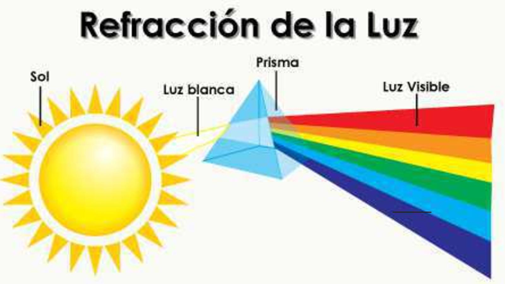

¿Por qué el cielo es de color azul?
El cielo es de color azul porque la luz del sol se decompone en muchos colores al pasar por el aire. Aunque la luz parece blanca, en realidad, está hecha de muchos colores como los arco iris. El aire tiene pequeñas partículas que hacen que la luz azul se disperse por todo el cielo, mientras los otros colores no se dispersan tanto. Por eso, cuando miramos hacia arriba vemos el cielo de color azul.
